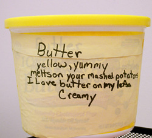

A cinquain is a five-line poem that was invented by an American poet who took her inspiration from Japanese haiku and tanka. Two popular forms of Cinquains were developed and are what we are going to be exploring today. Cinquains are particularly vivid in their imagery and are meant to convey a certain mood or emotion.|
Word Pattern: Line 1 = One word (noun) Subject and title of poem Line 2 = Two Words (adjectives) Line 3 = Three words (verbs) Line 4 = Four words that relate to feelings Line 5 = One word that repeats or refers to line 1 (subject) |
Syllable Pattern: Line 1 = 2 syllables Line 2 = 4 syllables Line 3 = 6 syllables Line 4 = 8 syllables Line 5 = 2 syllables |